2025 Joshua Tree 紀錄
基本資訊
Joshua Tree National Park (Joshua Tree National Park) 位於南加州，是美國冬季少數足夠溫暖可以外攀的有名岩場之一。距離最近的都市Palm Springs約45分鐘，距離LA約2.5小時。公園有兩個主要出入口（西邊和東邊），以一條主要道路連接，每天就會離目標岩場比較近的入口進入園區爬。
人員：HC、PH、Y
日期：2025/12/21-31 = D0-D10，D0和D10為交通天
地圖：link
天氣
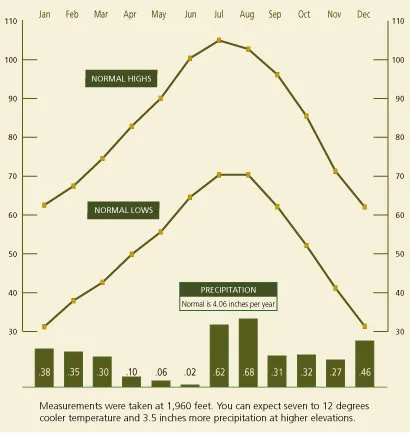
我們遇到白天攀爬時氣溫大約5-10°C，但是會有風，是否避風、有沒有在陽光下對體感溫度影響很大。所以務必注意保暖、選擇路線時也可以注意路線什麼時候會在陽光下（guidebook上會寫）。
至於降雨，其實根據統計冬天雨量並不算少，我們10天攀爬日共有3天（D2、3、10）有雨。值得注意的是，我們這次也有一天（D2）預報看來完全不會下，結果卻下得唏哩嘩啦。好消息是J-Tree岩壁乾得挺快的，只要不要下太大，等一陣子還是可以等到岩壁乾了再爬。即使預報說會下也不必氣餒，MP forum說降雨機率不到90%都不用太過擔心，可以找好撤的路線爬，很可能雨不會如預報的時間開始下、或是只下一點點。本趟兩天預報會下雨的日子（D3、D10）我們都各爬了兩條。
交通
這次大家都是飛到Palm Springs International Airport (PSP)，然後大家租一台車。也可以考慮飛到LAX再開車過來。
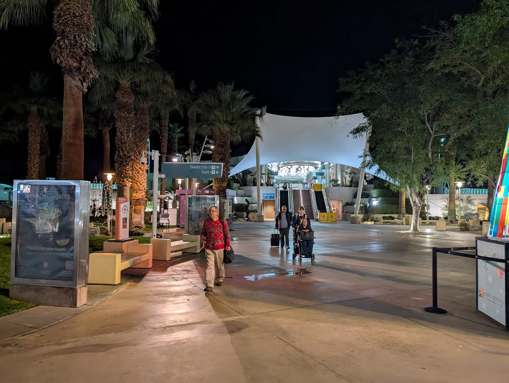
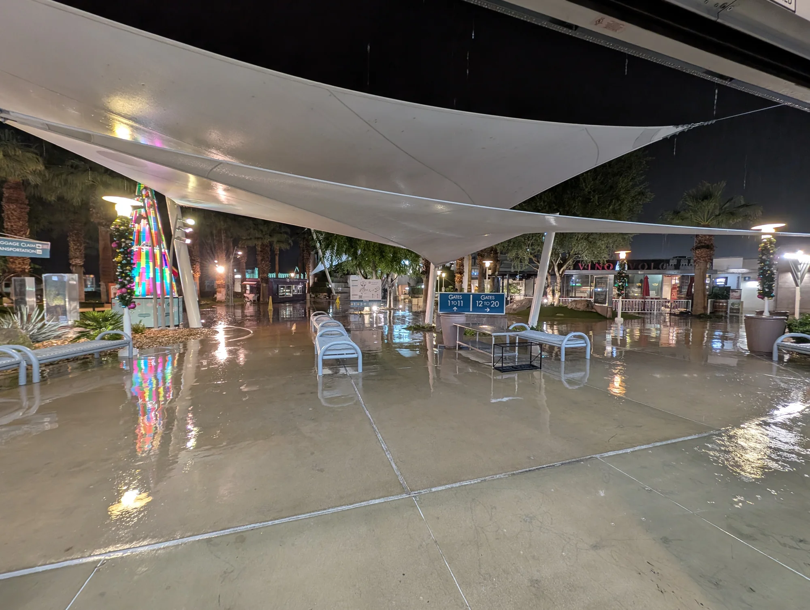
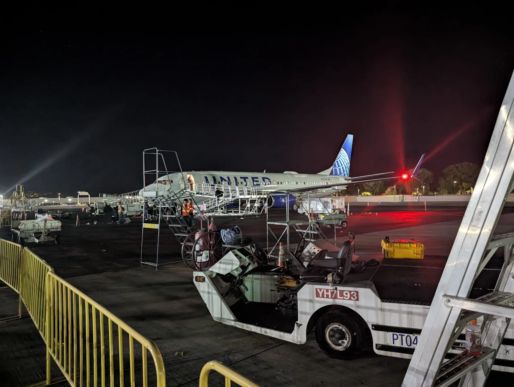
PSP機場很酷，TSA和登機門是不同的建築，兩者之間是要走到室外的，搭飛機時的通道也就只是個欄杆圍起來，下雨時在門口會有提供雨傘，但我們回程時過了TSA之後的雨傘被拿完了，我們兩個就只能淋雨跑到登機門。上飛機時也得淋雨。上左、下圖是HC去程拍的，上右是回程下雨的樣子。
租車方面這次選擇Turo，車型是Chevrolet Trax，如果只在國家公園或是城市區域不必租高底盤車子，但如果有打算住BLM等地方，車子底盤稍微高一點是必須的。
住宿
因為本學生很窮，所以我們和上次一樣全部camping（除了Day3晚上蹭了Y的飯店住宿卷）。以下是我們住過的campsite。如果租到大一點的車子 (e.g. Minivan)也許可以考慮睡車上，不過也要注意公園內很多地方是規定不能overnight parking的。
BLM Dispersed Camping Area for JNP
BLM Dispersed Camping Area for JNP
免費campground，本趟我們大多住這邊。基本上就只是一片空地給大家紮營，除了地之外沒水沒電但訊號蠻好的。google maps導航到那邊的時候，快到目標點的路上（離開柏油路後）其實找到合適的路邊空地就可以紮了，但走到快底的那邊空間比較大。因為是公共空間，我們怕東西被拿走所以每天拔營把東西帶走。
要注意的是，還沒到那邊的路上地上有很多有刺植物，刺到腳超痛而且會把東西（包含帳篷）刺破（刺很粗，甚至可以刺穿比較薄的鞋），所以還是推薦到底再紮，小缺點就是後面石頭多了些，這時候厚一點的睡墊就會比較舒適。
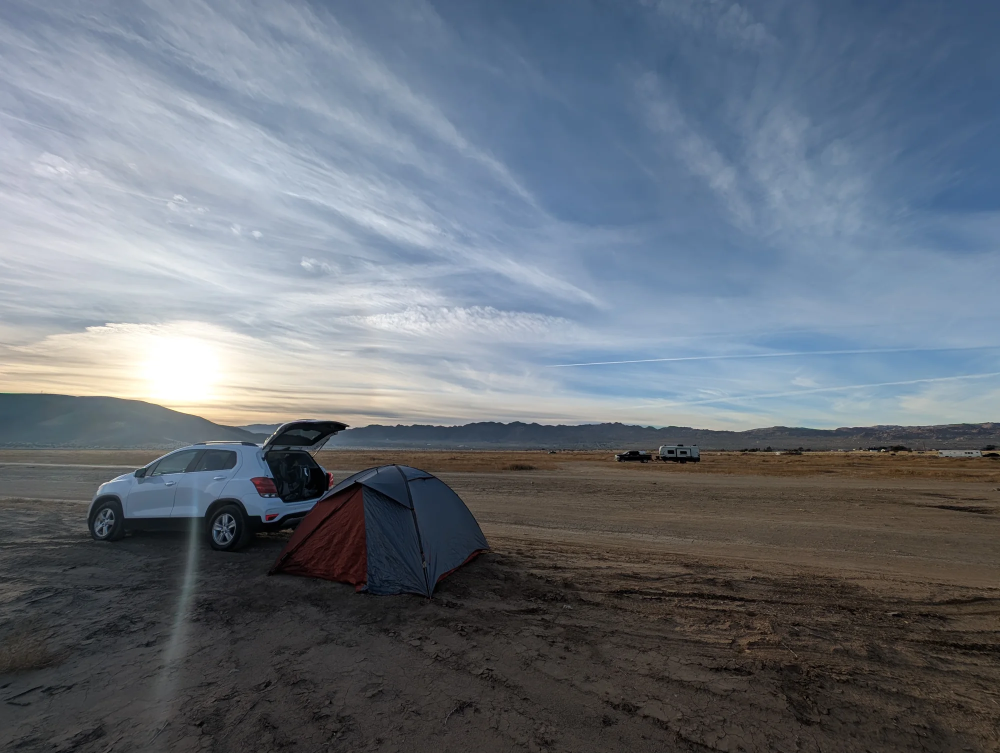
C0
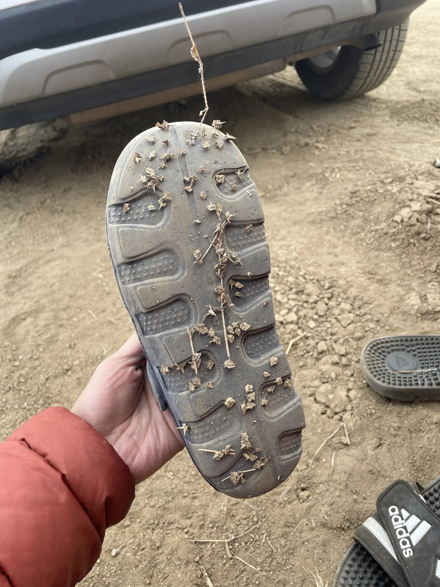
刺穿PH鞋子的植物-羊蒺藜 (Puncturevine)
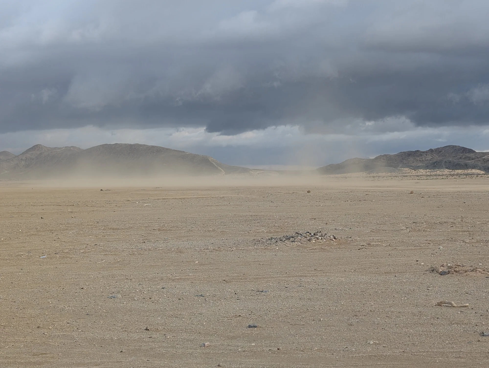
D3早上刮大風，在帳內以為是下雨、出去才發現是沙被風吹打在帳上。風大到收帳時帳篷差點被吹跑。
公園內的official campsites
公園內有很多地方可以紮，很多就在岩場附近（看MP上區域名稱叫campground的就是了，e.g., Hidden Valley Campground），所以想要大爆爬注重效率的話紮裡面是最好的，缺點就是裡面沒水沒電也沒訊號，所有東西自備而且與世隔絕。我們這次沒住這種，要的話似乎要早點訂，我們看的時候都被訂滿了。
公園外的official campsites
在和前述營地的同一個預定系統上也有一些在公園周圍的營地，我們只住了一個Black Rock Canyon Campground（Black Rock Canyon Campground），雖然有水有廁所，但訊號很爛（大約是等一陣子才能傳出訊息的程度），離岩場遠（因為在公園外)，甚至地不太平。完全不推薦。
Joshua Tree Lake
Joshua Tree Lake RV & Campground
私人campground，我們睡了兩天（C8、C9），算人頭的，一人一晚約15美金，有水、有超高級熱水Shower、免費Wifi，只差沒有電。如果想過爽一點不在意花錢和距離的話這裡很不錯。
飲食與充電
每天爬岩後的行程包含找地方坐著休息討論明天的攀爬計畫、到Grocery store買菜、到公園（或營地）煮飯、回營地紮營睡覺。
Groceries
- Walmart：就很大一間，幾乎什麼都有，但就比較沒有亞洲的東西（例如中式的麵），便宜的肉選擇很少，大概就是絞肉和培根。我們大多數時候在這邊買。有賣6盒裝的便宜雞蛋，適合沒有保冰設備的我們。
- ALDI：基本上就是Walmart的小間版本，東西比較少，不過肉的選擇多了一點點。
- Grocery Outlet：號稱專賣折價後的groceries，但實際上我們比價後發現其實也沒有比較便宜。不過有一些神秘的異國食品。
- Stater Bros. Markets：也類似ALDI，價格稍微比Walmart貴一點點但肉類選擇多很多，有很多新鮮的肉。
公園
我們買菜後幾乎都找附近的公園煮飯，因為這裡的公園超讚，有水有燈甚至有插座！於是這裡成為每天幾乎必備的充電時機。使用他人公共區域請保持環境整潔，不要早上髒亂（例如水槽阻塞）。
- Paradise Park：離西邊出口和Walmart較近，缺點是廁所的燈好像壞了。
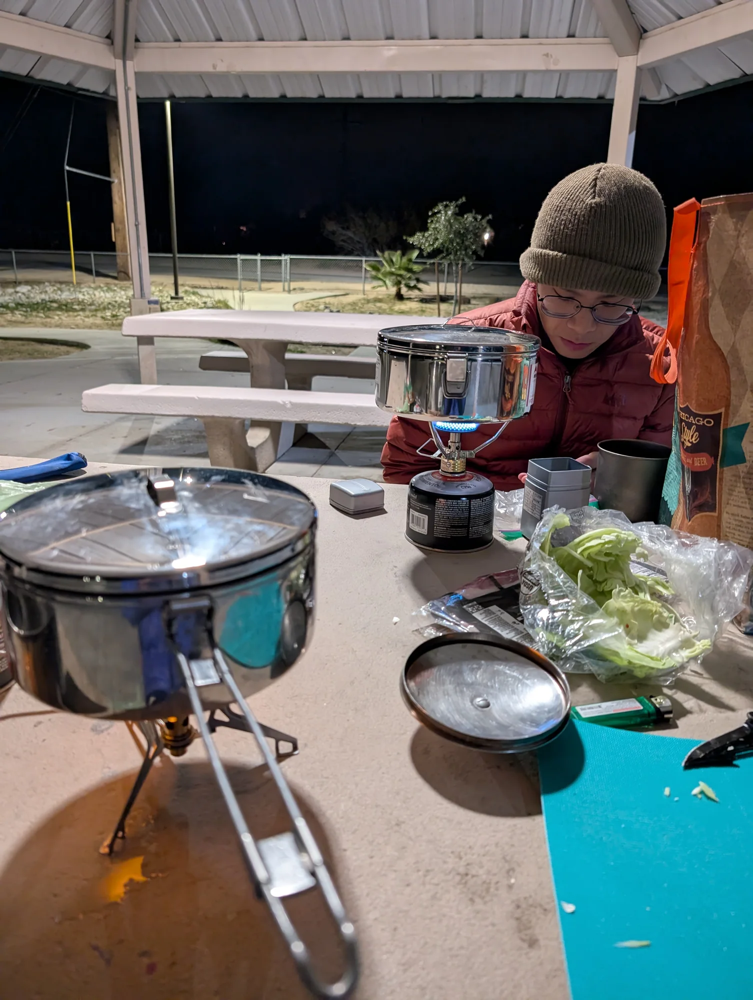
Paradise Park，最北邊的桌子旁的插座有電（不在這張圖的涼亭）。
- Knott Sky Park：離東邊出口近，也有水有電，缺點是風似乎稍微大一些，飲水機水稍微小一點點，桌子是有洞的那種鐵桌，要小心爐頭放桌上不要倒了。
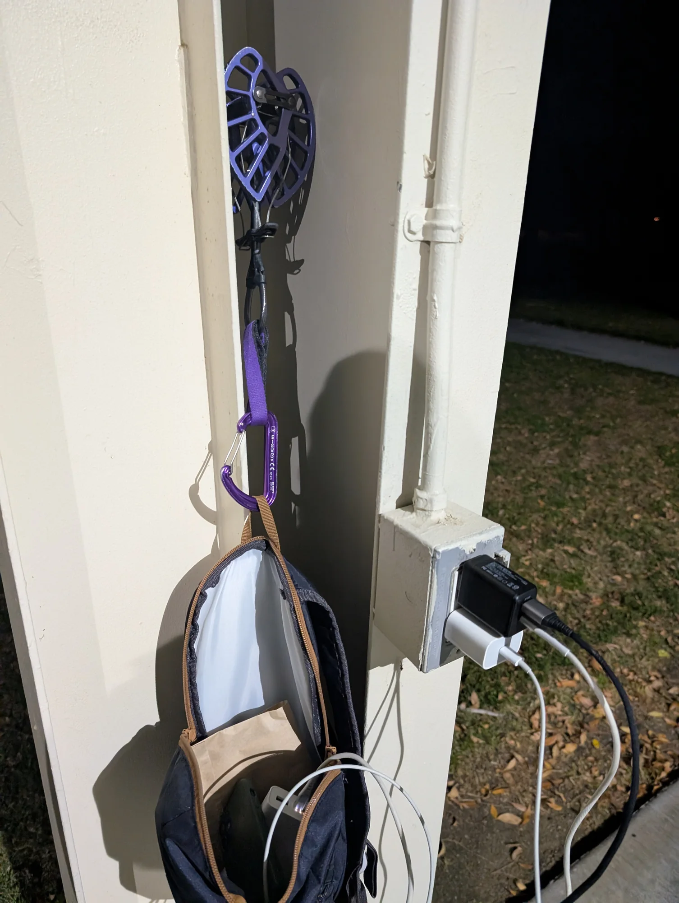
Knott Sky Park桌子旁都有插頭，我們用了一支#5把東西掛在那邊。
吃什麼
早餐和午餐和去年一樣夾三明治吃，買吐司、夾蕃茄、雞胸罐頭和花生醬。有時候比較懶，懶得夾就會分別分開吃掉。也常常爬到忘記吃午餐。
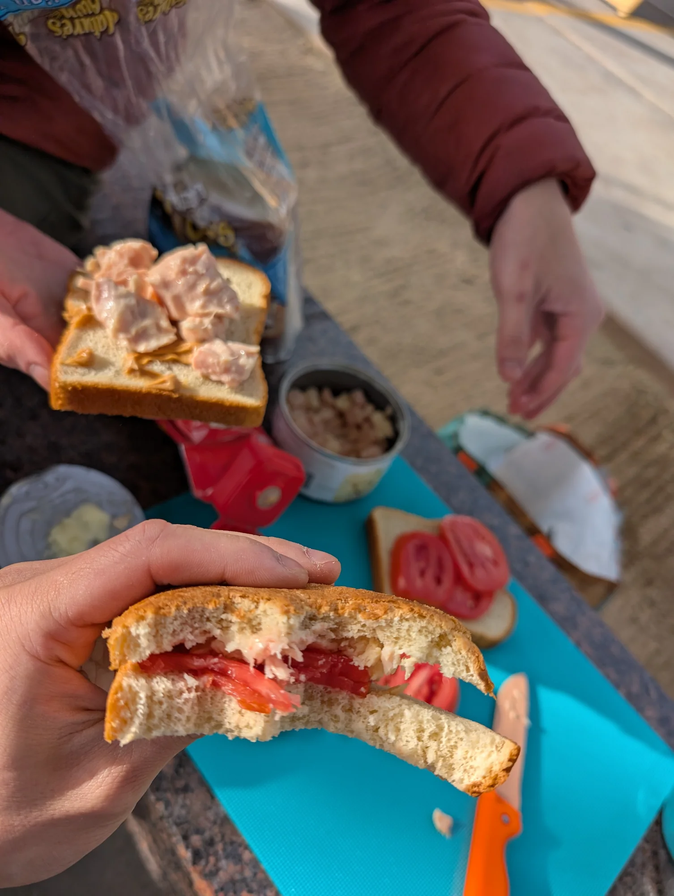
前幾天還有認真在夾三明治
晚餐的部分吃熱食：我們帶了兩個爐頭，基本上就是一鍋煮麵（義大利麵最好買）、一鍋煮湯把所有料丟進去。美國人camping很常生營火：在商店買firewood（大柴），然後用以下其中一種方式點起來 (1) 用超大火種（跟柴一樣粗）(2) 有一種用打火機就可以點燃的易燃木炭（我們是用這種） (3) 淋上某種易燃液體（Walmart也買得到），但是和山上一樣，這這種方式煮飯比較花時間又不穩定，所以最好還是不要當作主要食物來源。
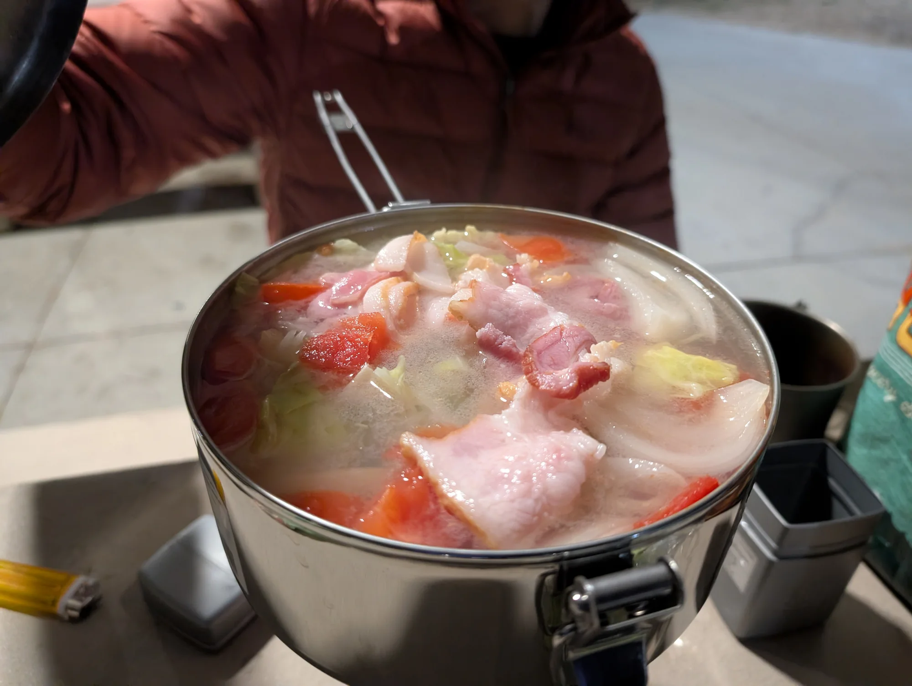
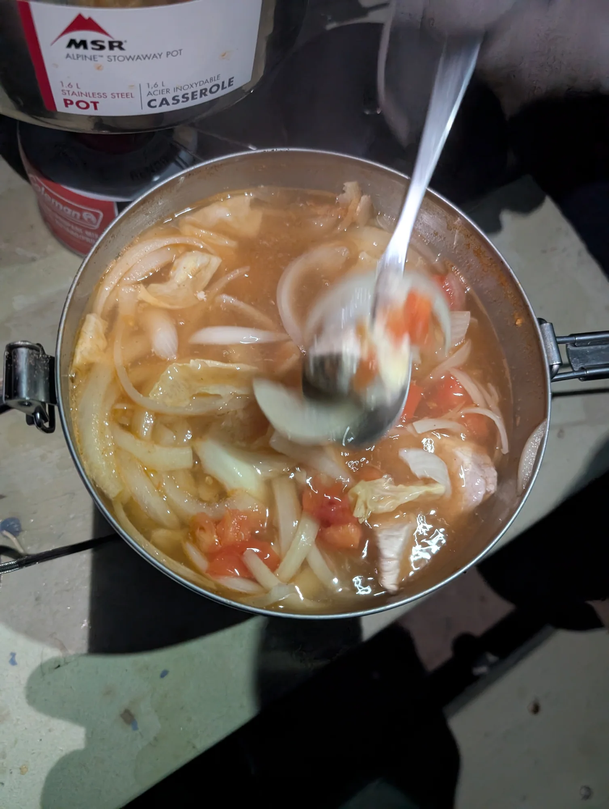
我們煮的東西通常長這樣，一鍋水放入一些相對耐放的蔬菜（洋蔥、高麗菜、蕃茄）以及當天買的肉（通常是培根或絞肉，比較便宜）。聖誕節當天超市沒開，就改用雞胸罐頭。
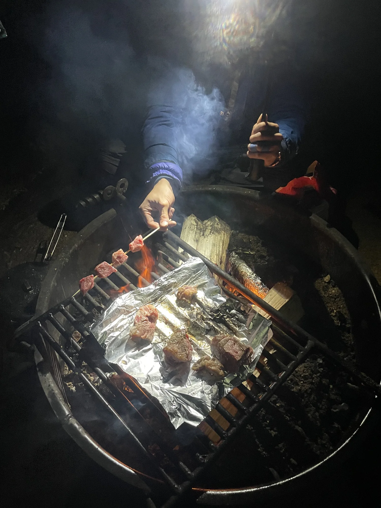
D5晚吃BBQ，美國大多Designated campsites都有這種fire ring，而且有附烤網，但都超髒，我們想說買個鋁箔紙但超黏還會燒起來，如果真的想烤肉強烈建議買個烤網。
休息
繼上次Red Rock的經驗後我們也找了麥當勞想充電擦澡休息。不過，這邊的麥當勞都有貼No Loitering的表示，限制只能待半小時，不過只要不要太招搖超過一些似乎也沒人在意。
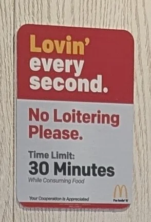
兩間麥當勞都有如此No Loitering的告示。
- 西邊的麥當勞：沒有插頭！Google maps評論很糟但看起來還算正常啦。男生廁所不像評論說的，不用密碼。
- 東邊的麥當勞：有插頭，在遠離櫃檯的那間。
水
國家公園內完全沒有水可以裝，因此記得在外面先裝好。我們發現可以裝水的地點有：
- Walmart：往上噴的那種飲水機，沒有噴很高所以（至少有一個水壺）沒辦法裝到很滿。
- 公園：往上噴的飲水機（同上）。Knott Sky Park的水有點少。
- 東邊的NP Visitor Center：正常的飲水機
- 地圖上有標注有水的地方。West Entrance Station在我們去的時候在整修，似乎沒有開放。
- 前述標注有水的營地
JTNP Logistics
入園門票
這次沿用去年PH在Red Rock買的年票。值得注意的是（至少在上班時間內）出園區時也會看門票，所以如果不是買年票、想在奇怪時間進出園區而不付錢的人要特別注意。
Visitor Center(s)
有兩個，西邊的Joshua Tree Visitor Center和東邊的Joshua Tree National Park Visitor Center，只有東邊的有飲水機，兩邊都有賣guidebook。西邊的對面也有一家gift shop（Coyote Corner），也可以去逛逛。
攀岩
岩質
花崗岩，結晶和龍洞有點像但是比較大顆，也因此結晶手腳點更好一點。岩質感覺也比Red Rock砂岩紮實一些，也沒有下雨後不能爬的問題。
Guidebook
一樣有Mountain Project （詳細介紹請看Red Rock篇，記得先下載好離線的圖片！），和guidebook。Visitor Center有賣guidebook，也有電子版guidebook但我們沒買（Joshua Tree Rock Climbing guidebook ）。
更：Anna's Archive上有Bob Gaines版本的Guidebook電子檔（.epub），可能因為是epub所以圖片畫質差了一點。這版只有運/傳攀沒有抱石。Visitor center有Robert Miramontes版本的，有包含抱石。
裝備
Rope climbing gear
- Rope (70m)
- Trad gear
- Cams
- (#.1, #.2, #5-#6) *1, (#.3-#.75, #2-#4) *2, #1 *3
- #.1-.3 (Metolius)
- Tricam *1 set
- Nuts *1 set (應該要帶的但忘了帶......，中間Y來的幾天請他帶了一套。)
- Ball nuts *1 set
- Stick clip
- Quickdraws: alpine*16
Crashpad
Joshua tree也有很多抱石可以爬，因此我們也用了D9爬了一天的抱石。我們租了一大一小的墊子，基本上只夠爬些簡單不大會fall的，要認真爬動作大一些的要不帶個4+張，要不找熱門的線然後賭會有其他人一起爬。我們在像是False Hueco、Yabba Dabba Stone、Caveman Boulder都遇到至少一群人，總共都至少有4張墊子。
High gravity rentals
我們租這家。基本上就是個像是自動販賣機的租賃系統。要注意的是雖然網路上claim幾乎不會沒墊子，我們九點多去租的時候剩下最後的一大一小張，因此最好還是早點去。
https://high-gravity-rentals.com/
- Small ($18/day) / big ($25/day)
- Vending machine pickup (no reservation required, 24hr)
- Location: Nomad Ventures
- Shop hour: 8-18 (Sun-Thurs), 8-20 (Fri-Sat)
Stone Adventures
我們沒租這家，事前準備的資訊放在這邊供參考。
https://stone-adventures.com/crashpad-rental/
- Regular ($20/day) or Mondo (larger, $30/day)
- Reservation required
- Location: Stone Adventures
- Shop hours: 7-16 (afterhours for rental is until 21, charges extra)
路線札記
注意：Joshua Tree等級Sandbag很嚴重，我們體感和龍洞大約差2-3級（e.g., J-Tree 5.7約接近龍洞5.9-5.10a的難度）。
D1 12/22
初來乍到，爬最熱門的Hidden Valley Campground。注意google map要導到intersection parking lot，因為campground沒有連到停車場。如果停車場滿了再去停campground的road side parking。
- Double Cross (5.7+)：PH先鋒。
作為第一條可能有點不太適合，基本上#3會需要3隻才會比較能放心地爬，當時只帶了一隻就上了...
導致需要下降去回收三號，關於racking 部分guidebook或MP不一定會寫得很詳細，不過經過這次基本上後面每次先鋒都至少帶兩組，體感龍洞5.9。
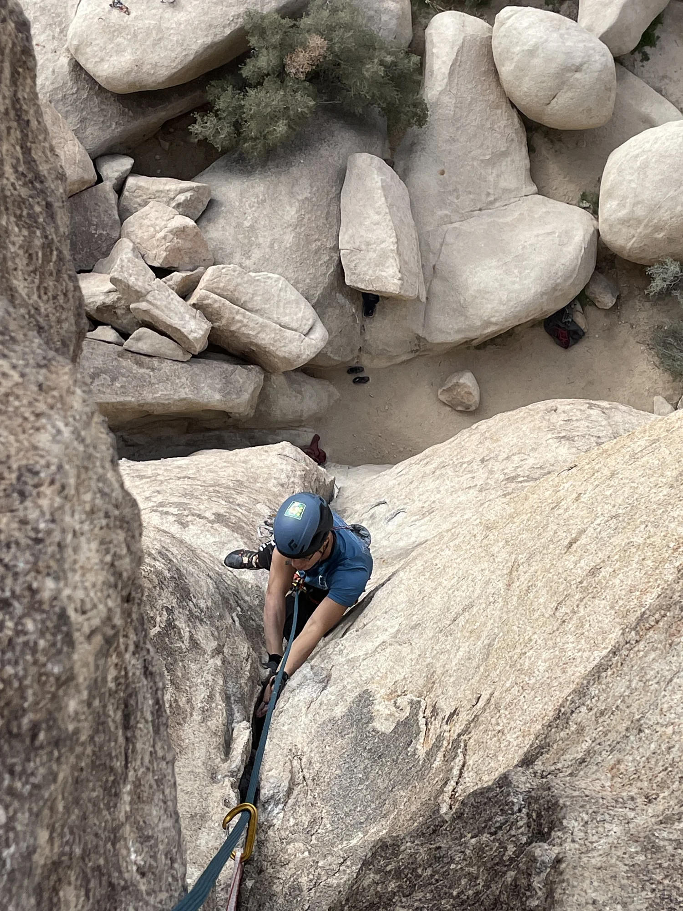
HC follow
- Dogleg (5.8+)：PH先鋒。
起攀十分tricky，被掌裂隙、thin hand教訓了一番，沒帶nut爬得很痛苦，要一直拆下面的保護點，爬完下降挺有趣的，要翻到東面處然後沿著一個煙囪下攀找到rap ring。體感龍洞5.10b
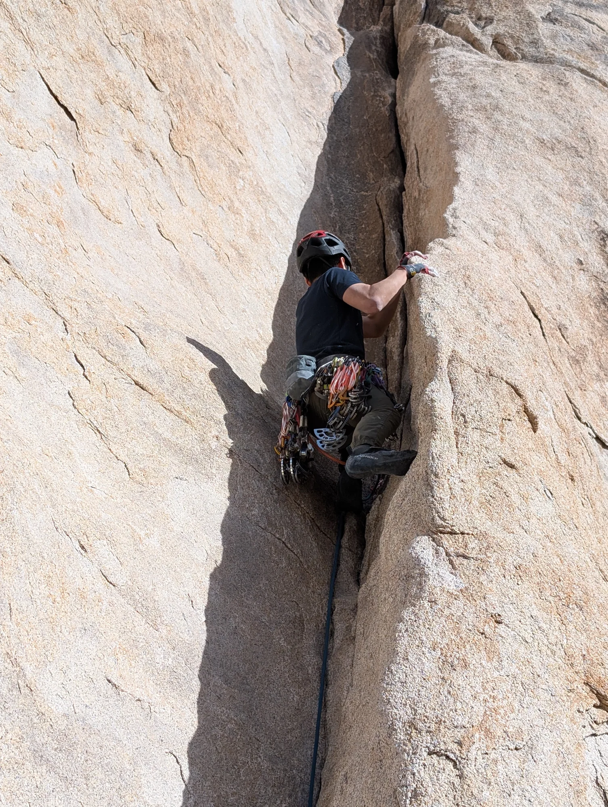
被thin hand 打敗，於是偷用外角岩點
爬完這兩條我們都累了，就逛逛附近的抱石。路過一個人問我知不知道這條怎麼爬，就一起試了一下。
- Brief Squeeze (V1-)：有點用力。但動作不大，一張墊子就行。
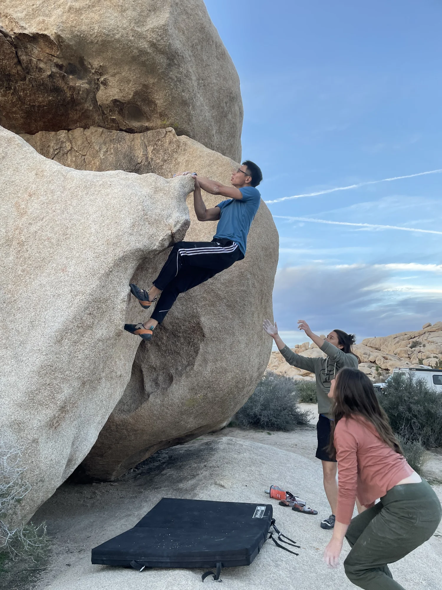
Brief Squeeze，岩友（粉色衣服）邀請路過的我（和後面那位綠色衣服的女生）一起試。起攀右手是左腳踩的pinch，右手搭左邊sloper。
D2 12/23
原本到了Real Hidden Valley要爬Fote Hog (5.6)，結果爬了三個保護就下雨了，還好前面是chimney不難下攀，之後就走了一圈步道，偵查一下路線，中間瞻仰了一下Illusion Dweller、Tumbling Rainbow等區，最後選定了Sailaway作為隔日的可能路線。
雨停了之後逛了一下那邊的抱石區，遇到一對夫妻看到我在看他在爬什麼，就說可以一起爬，於是跑回車上拿岩鞋一起試了底下這兩條。
- Yabo Roof (V3)：把手天花板路線，根據Guidebook說可能是世界上第一條sit start？
- Nitwitsit (V4)：Nitwit的sit start extension，難在起攀手點不太好、腳點也很爛，幾乎要campus了。
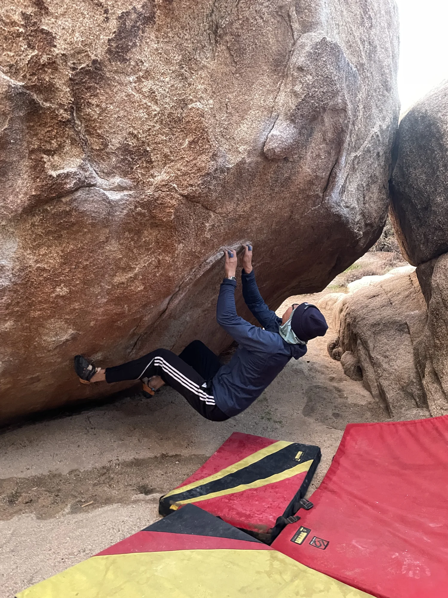
Nitwitsit，起攀從爛手點出右邊jug。
D3 12/24
預報說會下雨，趕在雨變太大前爬了這兩條在Real Hidden Valley的路線。接著就開回Palm Springs找Y，順便住Y住的Hotel。
- Sail Away (5.8-)：PH先鋒。早上先下了一場雨導致岩壁是濕的，路線前2/3都濕但腳點其實摩擦力不錯，花崗岩sloper腳點就算濕掉也意外還行，爬到後面越來越乾，我猜高處風大岩壁比較快乾吧? 最後一部分偏右走變成要硬爬手指裂隙，後來才發現左面有大手點...，體感龍洞5.10a。
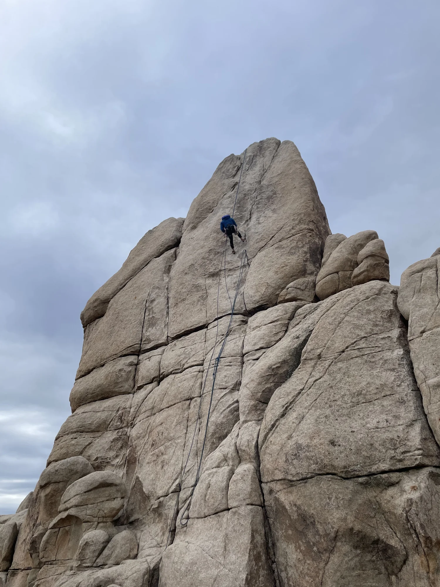
HC爬完Sail Away正在垂降，所在的位置正式上段的finger crack。
- Easy Day (5.4)：從頭把手到尾，但也從頭淋雨到尾，邊爬手點邊滴水。要是是乾的應該蠻簡單的，也很好保護。
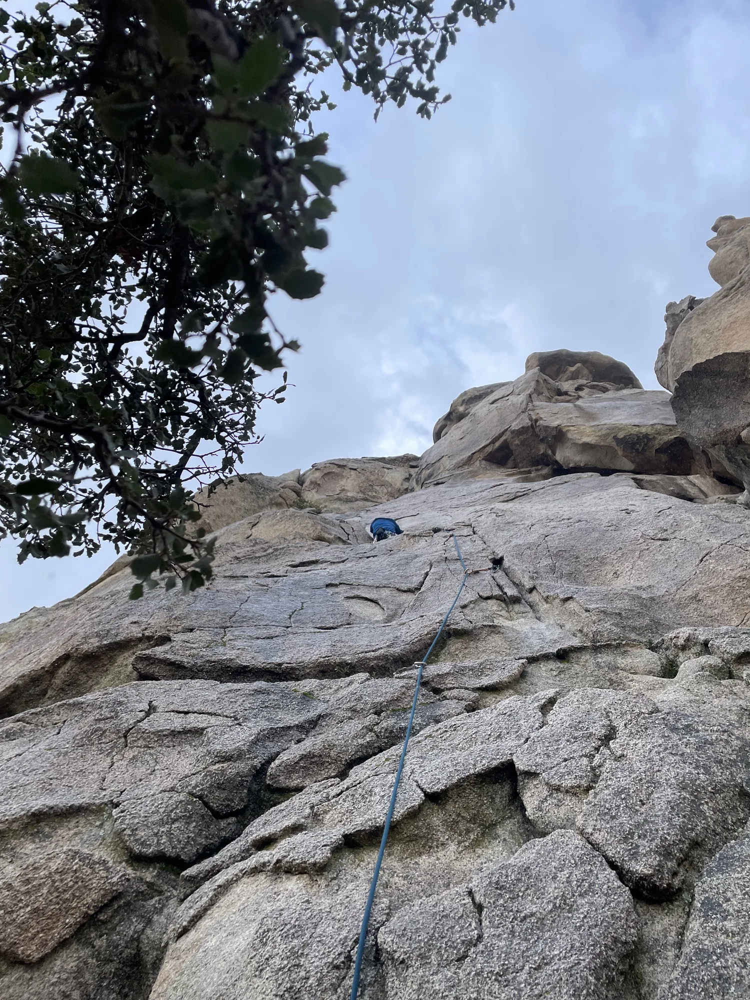
HC先鋒Easy Day，爬的時候岩面已濕，undercling都在滴水，感覺有點像在溯溪。
D4 12/25
今天爬Split Rocks。
- Bumpy (5.8-)：HC先鋒。這條運攀就在停車場旁，很酷的搭著一階一階的sloper上。
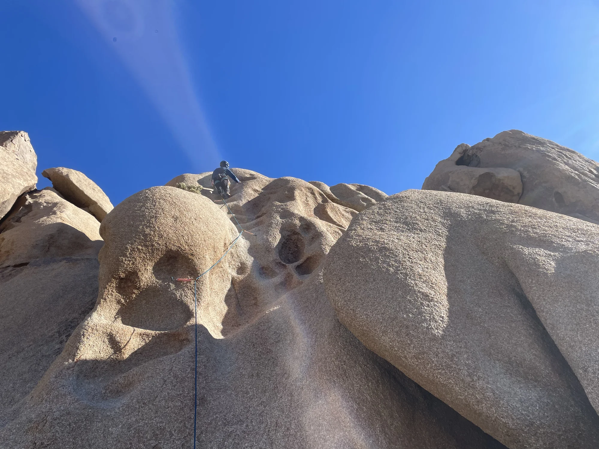
Bumpy，一階一階的sloper很酷。第一到第二個bolt有一點遠。
底下三條都在Isles in the Sky，走一段步道之後有一段4th class scrambling（一面內傾岩面中間有一條掌裂隙），頂端有bolts可以下來時垂降。我們把一部分裝備丟在底下，HC輕裝solo上去架fixed line，爬完路線後以現有rap ring 垂降。
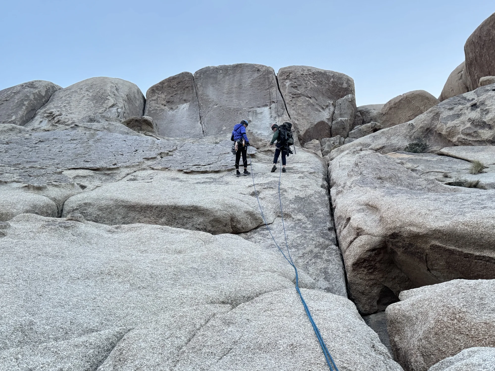
Isles in the Sky那段需要scrambling的approach，我是solo右邊的裂隙，但bolts在左邊一些，所以PH重裝推jumar時在左邊岩面上。圖為回程simul rap。
- Nectar (5.4)：HC先鋒。很簡單好保護的平整裂隙。
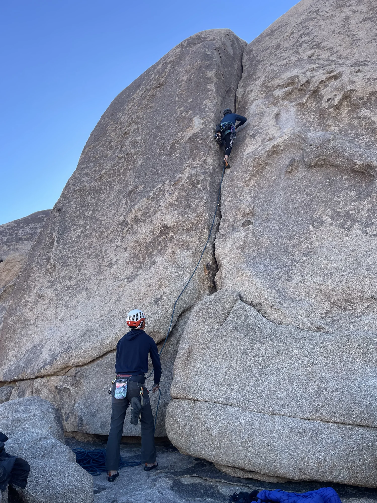
Nectar很舒適的裂隙。
- Dolphin (5.7)：PH先鋒，前半段是簡單掌裂隙#.75 -3，後半段才是精采部分 - off-width (OW)， 需要#4-6，一路想盡辦法用手肘、膝蓋等手段努力蠕動向上，無法參照任何爬過的龍洞路線，可能比基隆山雷霆岩重劍無鋒簡單一些。
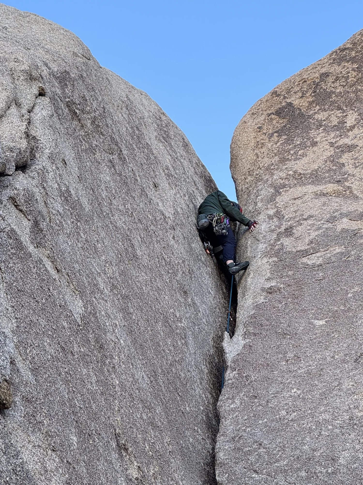
PH正在Dolphin上段的off-width。
- Bird of Fire (5.10a)：HC先鋒。一開始有一小段run out後才有裂隙，因此我們在垂降前一條時先在裂隙底放好第一支#.5。上面是finger crack，最後一段是外傾，但旁邊有蠻多東西可以偷。雖然帶了很多隻小號cam但實際上還是#.5-#1用最多，上段外傾在開始前放了#.5後直接上到top jug。
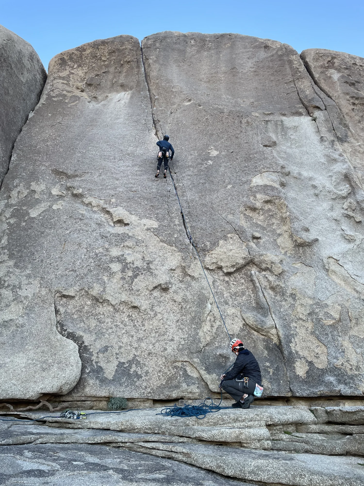
HC先鋒Bird of fire，大約從這邊再往上一點開始就是外傾finger crack。
D5 12/26
就想爬點多繩距，Y爬繩中。
- The swift (5.7, 3 pitches)：這部分沒有溝通好，HC和Y以為我們要爬 Dappled Mare，但PH一直以為是要爬swift，P1PH先鋒，路線十分曲折，rope drag超大，以為要爬到有rap ring的地方但一直沒看到，才發現根本就沒有bolt (有bolt的是Dappled Mare)，所以其實一次lead完了原本swift的第一和幾乎全部的第二繩距，也難怪rope drag過大...，另外也用繩過多，導致後段繩不足35m所以HC以simul 方式second。P2 HC先鋒，要從內角橫渡到岩角上，有個明顯大腳點的地方不是橫渡的地方，是在那之後，暴露感有點大。P3PH先鋒，路線只剩下不到10米...，非常簡單。從北側walk off，部分地方需要下攀很不好走。
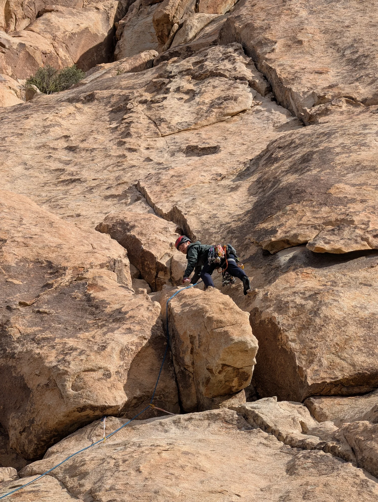
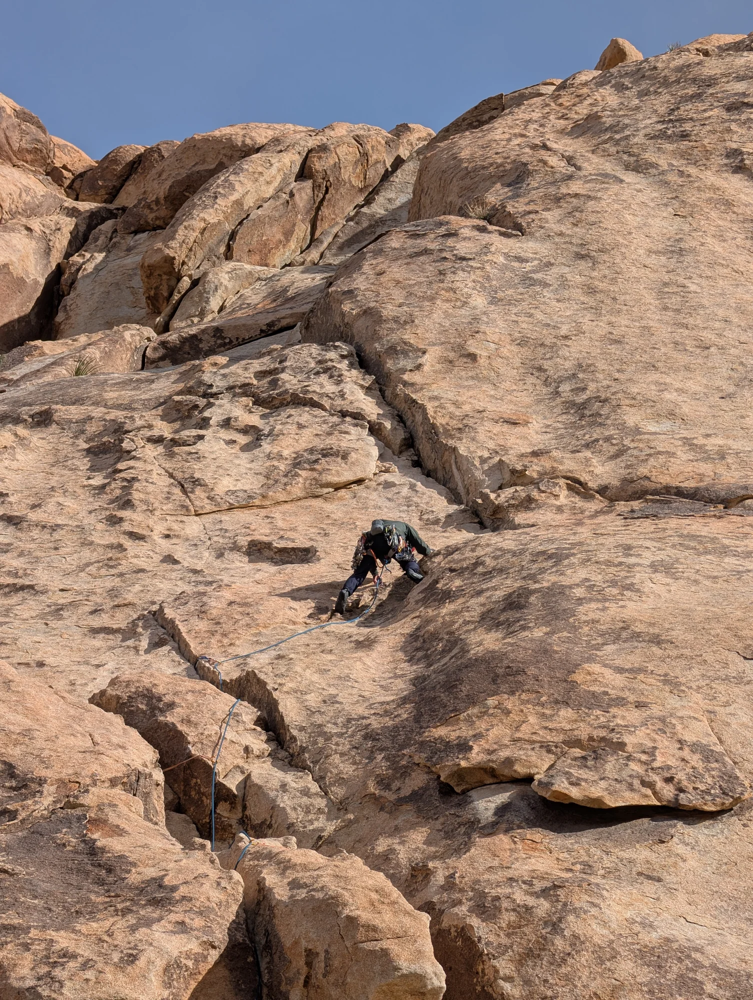
PH先鋒The swift P1，因為底下那個煙囪附近的轉折讓rope drag很大。在煙囪前原本還有另一個轉折，但PH走了直上的捷徑讓轉折小了一些。
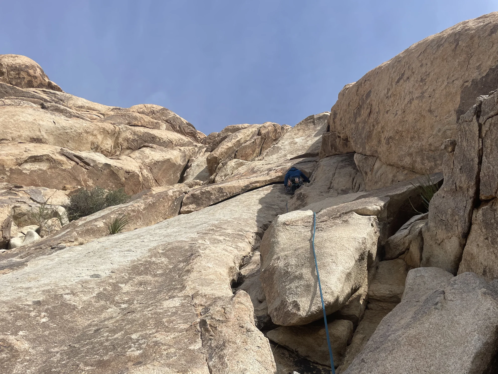
HC先鋒P2，沿著內角爬一段之後要從右邊翻出去。剛翻出去的那一步做了個Layback，暴露感有點大。
接著到Ryan Campground爬點輕鬆的運攀。這兩條在Headstone Rock上，在一堆大石頭上面，需要先稍微Sramble up。
- Cryptic (5.8)：HC先鋒。前段slab上幾個快扣後（有點遠），沿著jug橫渡到arete。看MP有些人在這邊拍看起來很帥的dyno照但其實根本不用cut feet。
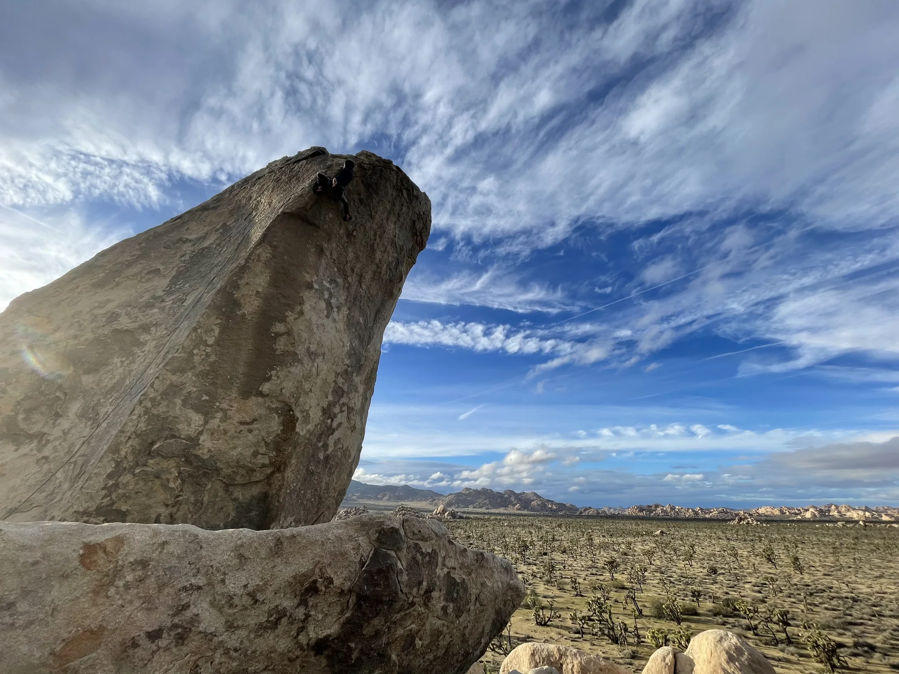
Cryptic，後半段橫渡到岩角，整排全是Jug。
- SW corner (5.6)：PH先鋒，據說是世界上最可怕的5.6??，前半段是slab，後半段是岩角，暴露感極重!!! 結束後已天黑，跟HC以同時（平衡）垂降（simul rap）方式追求效率。
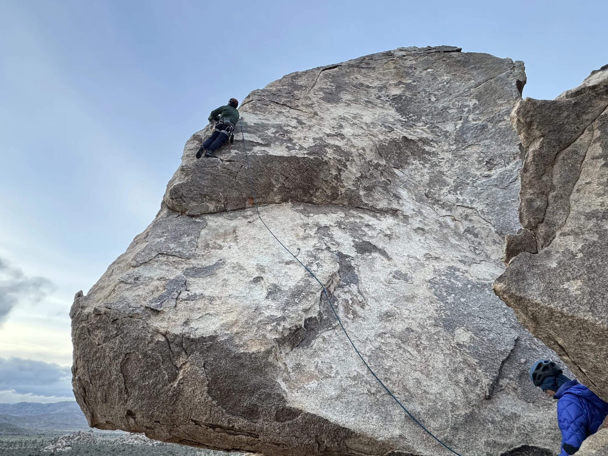
PH先鋒SW corner
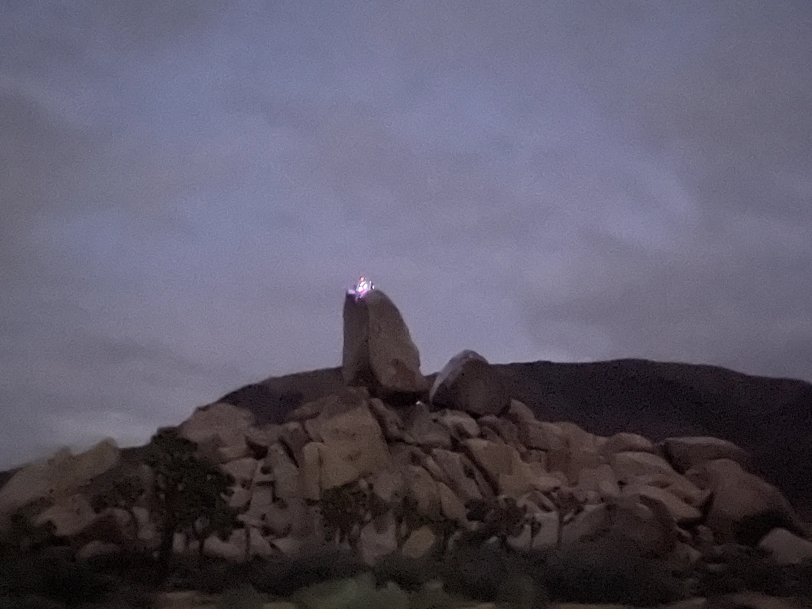
我們下來時天已經差不多要黑了，有另一組人剛要上去，下來時拍到他們帶彩燈到top開party。
D6 12/27
今天下午要送Y去機場，只有早上可以爬，決定爬hidden valley campground 停車場附近的intersection rock。
- Overhang Bypass (5.7, 2 pitches)：P1PH先鋒，從一個大凹洞翻到上面的天花板下方，MP留言說從左邊繞出來比較簡單，不過PH錯過了直接正上，比較難一些，一開始裂隙超窄（#.1），上面有sidepull jug但有點遠。P2 HC先鋒，是有點像踢刀邊緣的橫渡，但比較短、且底下有一些腳點可以偷，整體來說其實好像不如剃刀有趣。塔頂是很多條路線共用anchor，所以要有跟別人協調的打算。
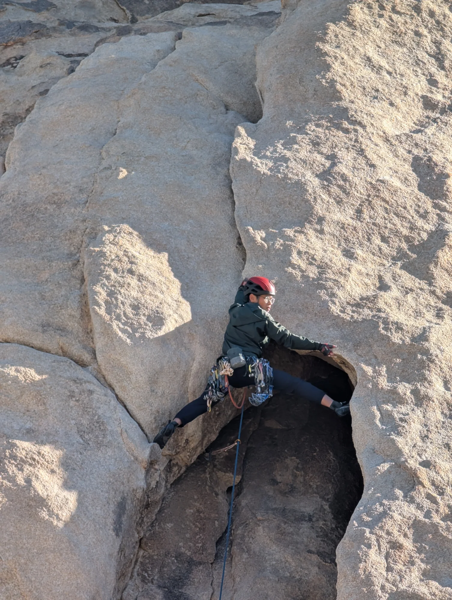
Overhang Bypass P1的凹洞，比較簡單的走法應該是左邊裂隙。
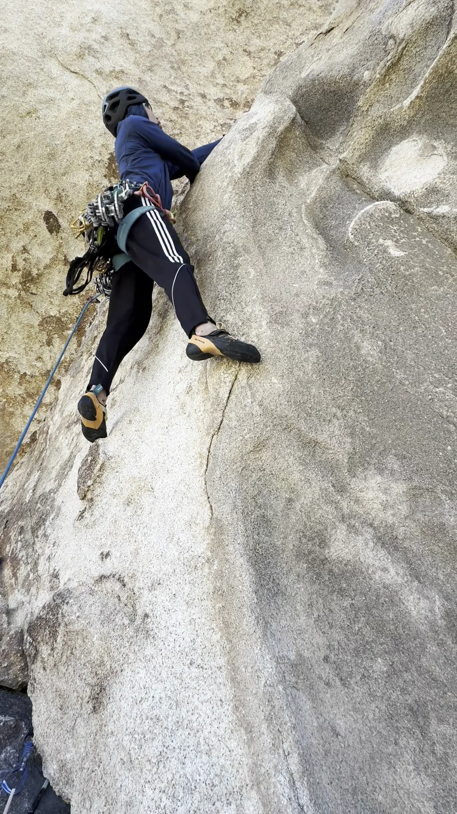
Overhang Bypass P2的橫渡，底下有一些腳點可以偷。
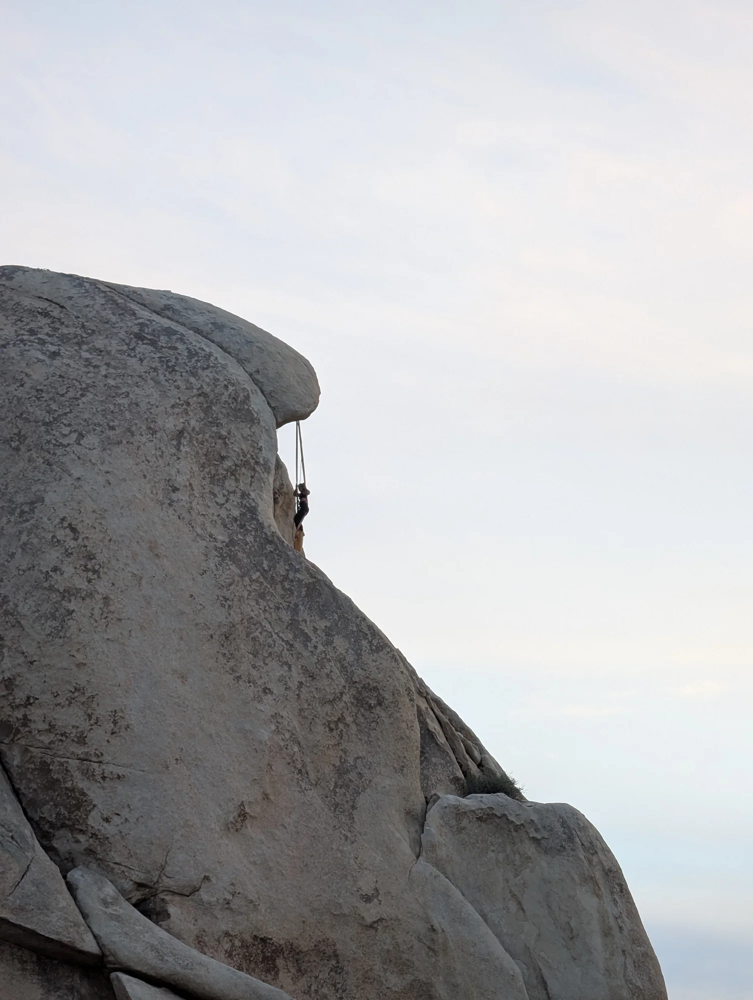
D1看到有人在Overhang Bypass P1 top的平台做空中瑜伽。
D7 12/28
今天先爬Jumbo Rock的Conan's Corridor裡面的線。approach岔出步道後植物有點多，接著就進到很窄的峽谷，重新打開後就到了。Jumbo Rock Campground的停車場只有4個位子，我們剛好運氣好有停到，否則就得出去停到路邊。
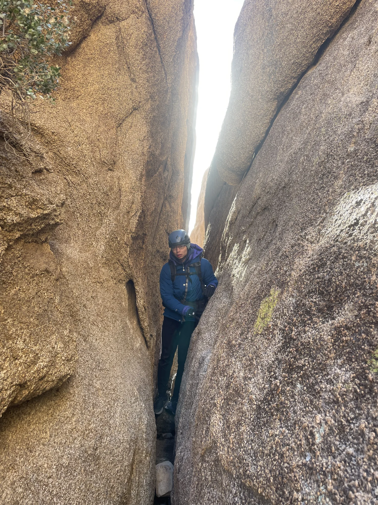
的Conan's Corridor approach路上的峽谷
- Colorado Crack (5.9)：PH先鋒，掌裂隙、指裂隙、thin hand都有，五顆星的精彩的好線，有部分還可以以身體靠岩壁no hand，體感龍洞5.10b。
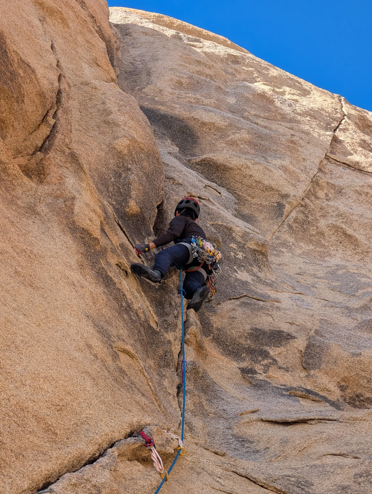
PH先鋒Colorado Crack
- Spiderman (5.10b)：爬完前一條之後從上面架TR solo。底下裂隙有些不平整不太好放的感覺，上面裂隙漸寬變成off-width。到最上面用用到#4即可（我們在這裡refix rope避免磨繩）。
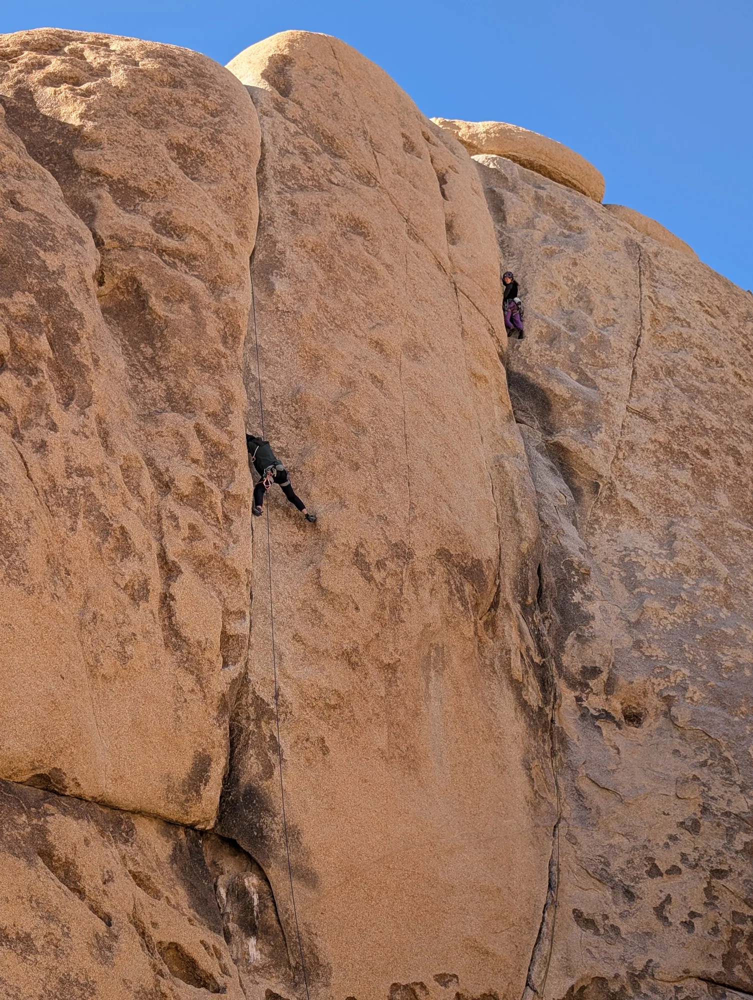
PHTRS Spiderman
爬完之後原本回到Echo Rock要爬Touch and go，但有另一組（3人）搶先了，Pope's Crack又怕搞太久，於是開回Split Rock的Overbolted Rock爬短運攀。
- Boulevard of Dreams (5.10a)：PH試圖先鋒但連起攀都無法，所以就靠HC先鋒。friction slab，從大石頭起攀，踩一堆虛無飄渺的腳點，後來換PHtop rope時天色已黑，手腳點就算有頭燈感覺還是沒看得很清楚(電池用盡)。
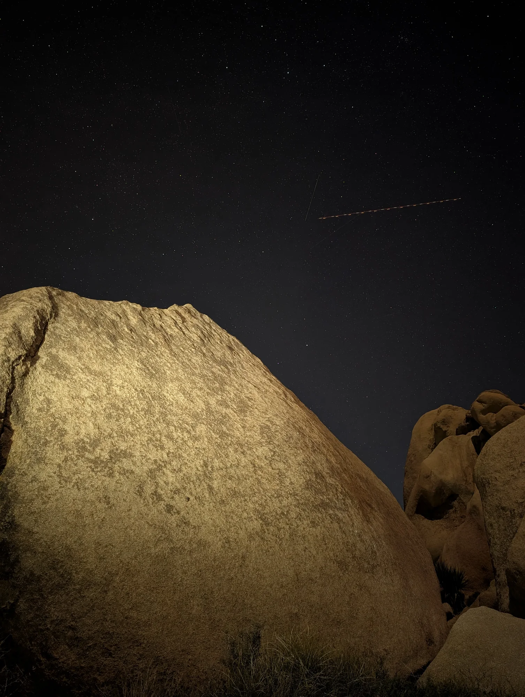
夜中的Boulevard of Dreams，從右側大石起攀。
D8 12/29
今天爬OZ area的Emerald City。開車到MP地圖上的步道起點，有個roadside parking。不要相信MP上的步道，對著GPS沿著步道大致方向走就可以了，有時會跟到路跡然後跟一跟又會偏離地圖上的步道，在有人開發固定的步道前可能只能拿著手機硬切。跟著MP上的步道方向會繞過幾個山丘，然後到一個堆滿超大石頭的乾溝。Emerald City在右岸（面對上游左側）的那個岩壁的背面。地圖一開始從左岸繞再切回右岸，但其實一直跟著右岸找地方慢慢上切應該就可以了（此處已經完全沒有路跡）。總路程約一小時，記得帶夠水，沙漠很乾。我們在路上還有在岩縫看到rattlesnake（響尾蛇），務必小心。到上面的時候石頭開始變得綠綠的（也許是此區名稱的由來？）
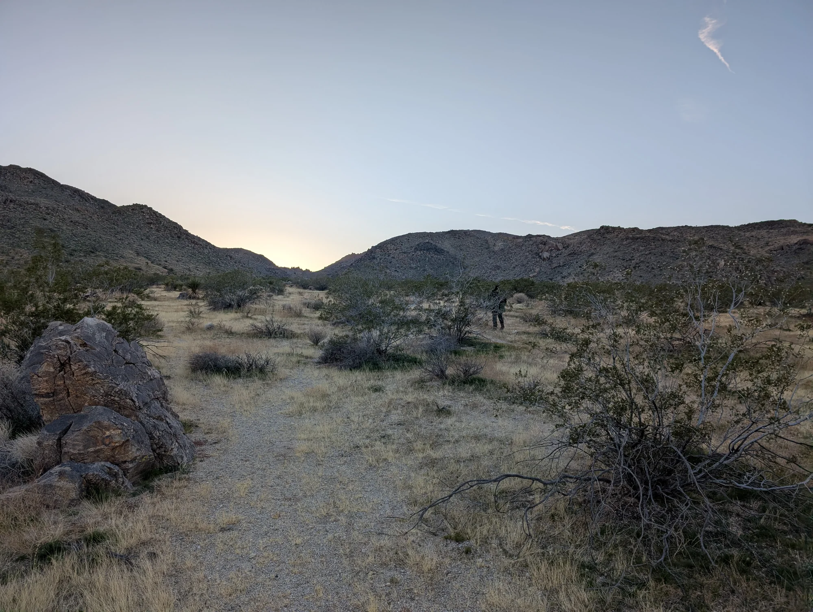
OZ Area approach前段的沙漠，看著手機穿過這區就是了。
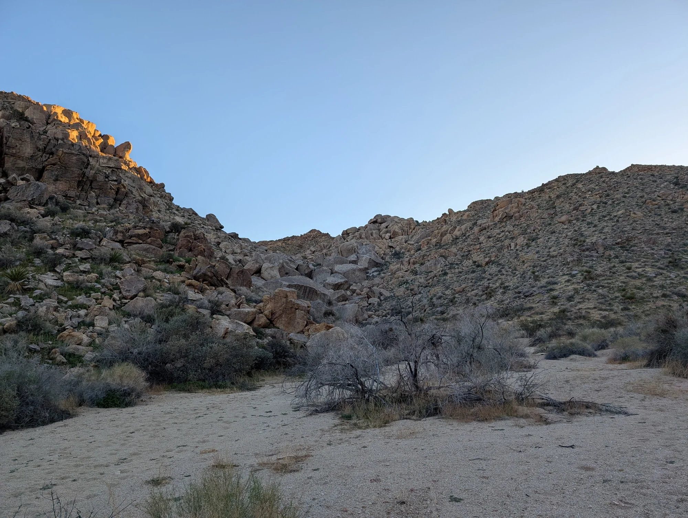
往Emerald City的乾溝，Emerald City就在左上方還在陽光下的岩面的後面。
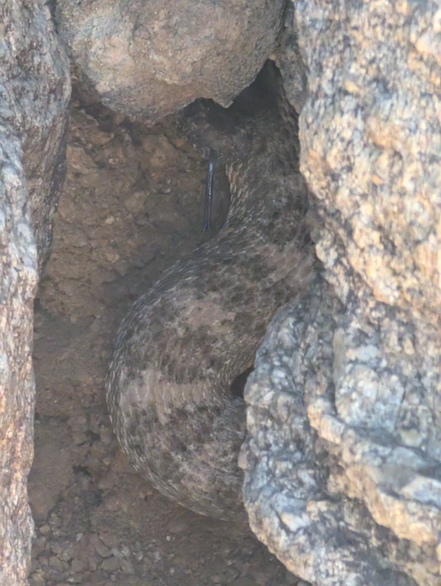
快到Emerald City時看到的Rattlesnake，真的會發出像這樣的聲音（但沒看見他尾巴就是了）。遇到他之後我們都有點緊張，行走時格外小心。
- The Rattler (5.10c)：PH先鋒，從一開始手指裂隙到thin hand，外傾卻有十分特殊的內角，讓人想到黎明的clam digger，一樣是要用膝蓋和腳底去撐住，後面平台後再接類似龍路的ow，體感龍洞5.11。
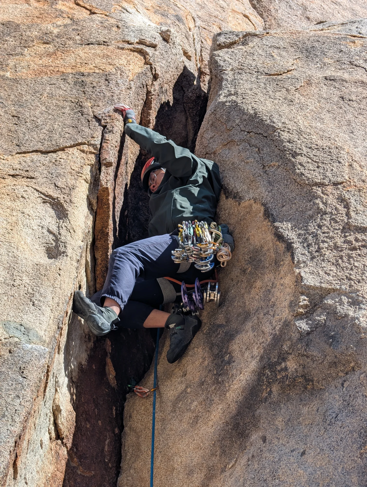
The Rattler翻出內角的部分，感覺是crux。
- Snake Book (5.11b)：爬完前一條之後直接從上面架TR。一路內角推撐到頂，中間裂隙有時也可以拿來幫忙做重心轉換。
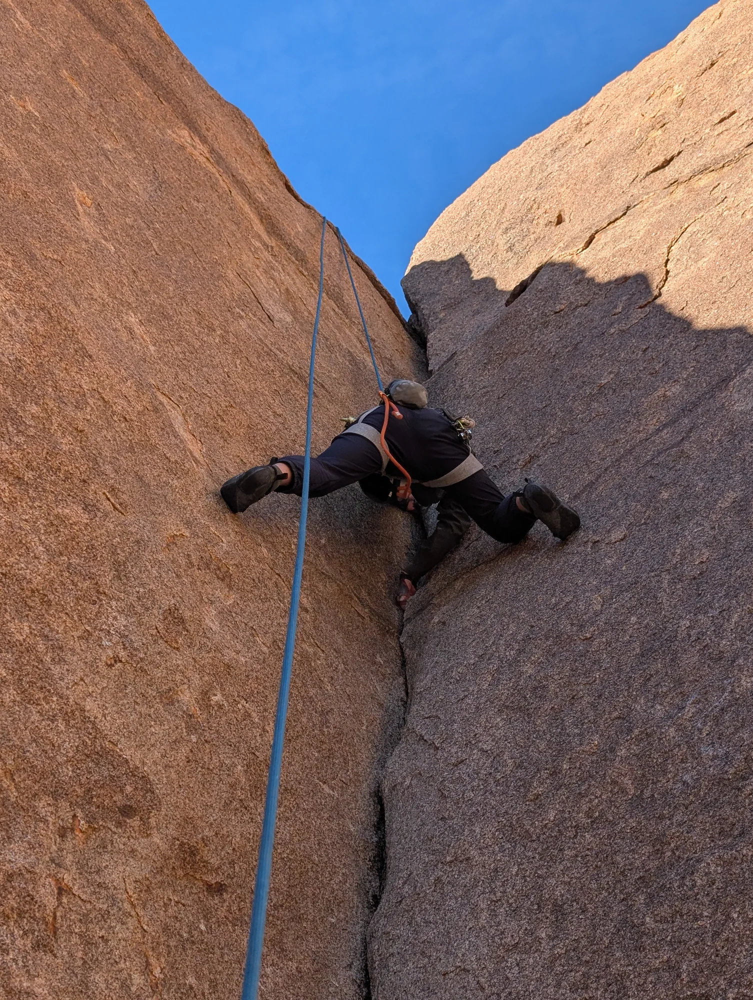
Snake Book內角。
原本爬完這裡之後還要爬Hollywood Area的arête，但發現走回去已經要天黑了只好作罷。
D9 12/30
今天是抱石日。租了一大一小的墊子在Hidden Valley Campground到處爬。
- Pothole rock：就是一堆V0附近的線，搭一堆sloper，有的其實不容易。
- Pothole problem 1
- Pothole traverse
- Desert rat crack
- Pothole mantel #1 (no send)
- Lizzie boulder：在一個小岩丘的頂，要先scramble up，兩側都可以上。
- Thin Lizzy (V8, no send)：原本看起來覺得感覺也許有希望，結果摸了難關的點發現實在太爛、接不住big move，回家練練再來。但別人的影片看起來真的超酷。
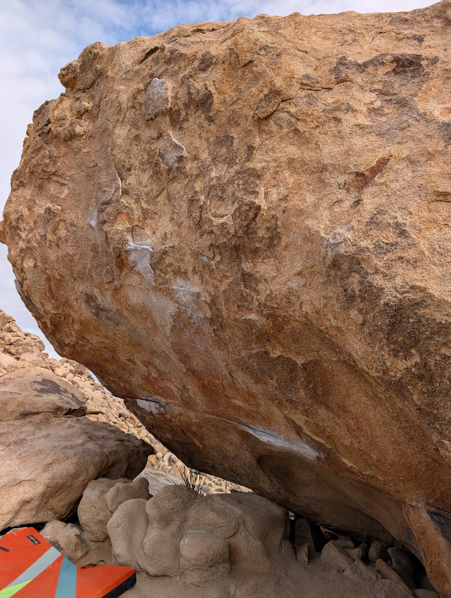
從右下方那排jug出到上方有tick mark的crimp。
- Not so thin Lizzy (V3)：旁邊的把手版本，但還是需要一些commitment ，Landing也不是很好。
- Yabba Dabba Don't boulder
- Yabba Dabba Don't (V3)：一個斜向的big move，但不用dyno。在這裡遇到另外兩個很強的人拿這條熱身，他們看到我們拿兩張墊子就想爬這條感覺有點傻眼，就趕快來幫我們補了兩張還幫我們spot XD。
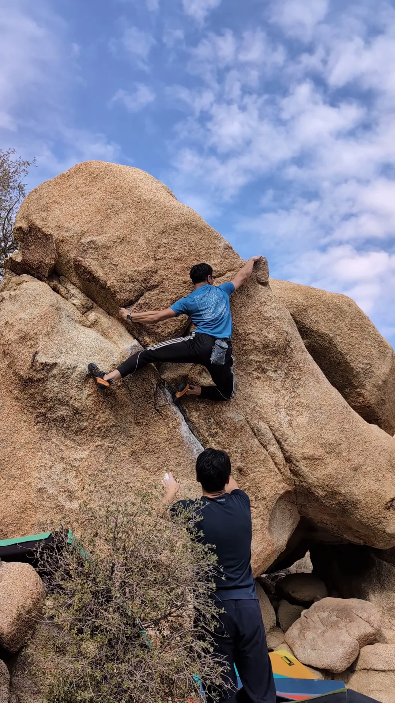
- False hueco boulder
- False hueco (V1)：直上，外傾搭配還不錯的crimp，蠻讚的線。
- Black streak dyno (V5, no send)：同樣的起攀但往右橫渡後再上，橫渡蠻簡單的，但最後的dyno發力的位子有點難，手點有點爛。
- Stone throne boulder
- Swirly Whirly (V-easy)：一條要先蹲在洞裡然後轉出來的酷路線。
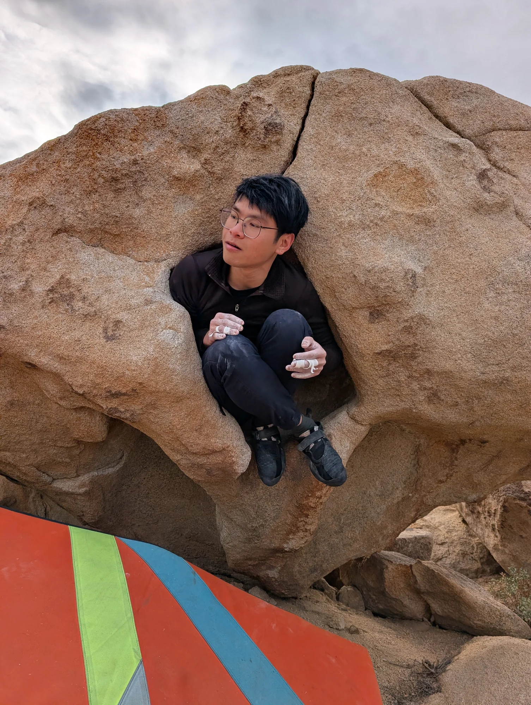
- Caveman boulder
- Caveman (V7)：很讚的線，有很多人在一起試（大部分的人其實是試V10的sit start extension），所以pad很多。起攀橫渡後到中間難關drop-down ，最後再往上完攀。一開始看影片，很多人橫渡match一個undercling，但試了別人的beta發現只要手夠長其實可以直接跳過undercling做一個大gaston搭配大dropknee。到drop-down之前的gaston蠻簡單的。可惜等我把這前面接起來的時候大家已經要走了，來不及把難關動作試完接起來。這條從頭到尾點都很好，就是有點用力、有點長，適合指力不好的人（如我）。以後有機會再來試。
D10 12/31
原本預計爬Intersection Rock上的Lower Right Ski Track，但整裝完準備去爬的時候發現有人比我們搶先一步而且動作有點慢，決定改去D7沒爬到的Echo Rock。今天一直到兩條路線爬完都是斷斷續續飄著雨。
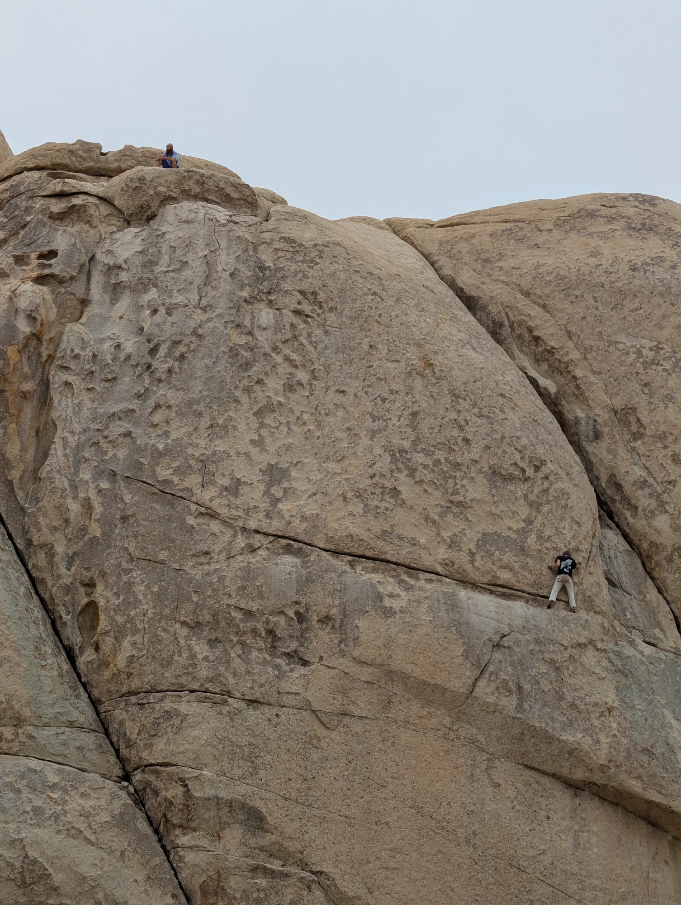
有人在Intersection Rock上free solo。
- Touch and go (5.9)：PH先鋒，雙裂隙系統，從指裂隙到掌裂隙。
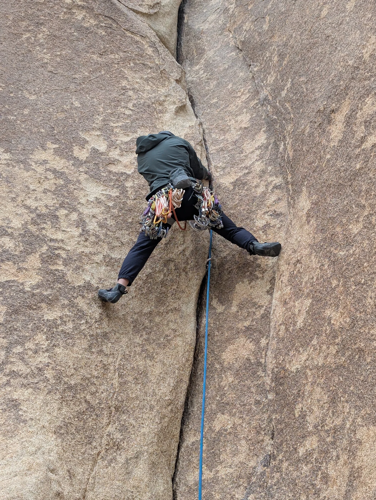
Touch and go前段，除了中間之外右腳處有一條窄裂隙。
- Heart and Sole (5.10a)：HC先鋒。前面有三個bolts，可以用掛繩器掛到（如果有人在起攀處撿到掛繩器麻煩幫我帶回來……），前面是friction slab，難關是從第三個bolt要進到裂隙處，手長一些的話可以從右邊好點勉強撈到裂隙的finger jam然後插一支，後面layback就蠻簡單的。
支出
支出表：2024 J-Tree 支出表
此外另加上到Palm Springs的車費和機票錢。
後記與心得
HC
這趟爬了許多大大小小不同的裂隙，從finger crack到off-width都有，練習了各種不同的技巧。尤其finger jam信心增加不少，off-width算是第一次爬，還抓不太到訣竅，爬起來超累超痛。這趟因為手上剛好新手鞋磨破了，唯一的硬鞋剩下剛補好的Instinct VS，因為downsize所以腳塞裂隙超痛、外側沒有橡膠感覺很傷鞋子、而且因為沒有保護腳踝，爬off-width時用腳踝頂裂隙時一直磨到腳踝。看來TC Pro包到腳踝還是有點道理的。
另一個highlight是”Know your system”。這次10天中我們用了很多各種不同的系統，除了中岩最常用的基本操作外，有時我們會視情況用top rope solo、simul rap、simul climb、用Pinch或Spoc確保、或是各種主繩延長anchor （為了避免磨繩、增加效率等等）。這凸顯了在戶外攀岩只學一套操作想要在所有情境使用是很困難的；相反地，應該了解多種不同做法的優缺點，才能在不同的情境和考量下使用。
這趟算是我第二次爬outdoor bouldering。出發前妄想可以爬一些很難的路線，但實際上發現自己對small crimps （<10mm）的力量還是太差了，需要再練練。另外，一兩個人要爬難線（通常路線很長、或動作很大、或兩者兼具），除非一個人有超多pad，否則還是約一群人一起去才有辦法。例如那天我們遇到一組兩人要爬Thin Lizzy，他們兩個人就帶了4張；或是在Caveman時同時有很多組人輪流試，洞穴裡至少有7-8張墊子。
連爬10天乍聽之下很累，但其實現在回想起來似乎也還好，主要還是得看攀爬的內容。前8天因為每天攀爬量都不多，所以其實除了肩膀有點緊（主要是因為上方確保的關係，用giga jul確了幾天發現很累之後後面就改用pinch有稍微好一點。如果要更省力一些也可以考慮用單向滑輪，但不能給繩靈活性就稍低一些）之外其實不會太累。倒是D9爬了一天抱石之後隔天早上感覺身體被車撞、手掌感覺像是燒起來一樣（到現在回來第二天了，手感覺還像隔了一層膜一樣，打字手感好差XD）。當然，有一大因素是所有off-width都不是我lead的XD（PH辛苦了）。總之，只要妥善安排攀爬內容，連爬多日似乎其實也不是太大的問題。回想去年在Red Rock其實也是類似的安排，只有D1和D7爬比較難的運攀。
感謝PH時隔一年又陪我過了dirtbag的10天，還lead了很多好玩的路線給我爬（很多傳攀路線我都想說如果lead不上去反正下來給PHlead就是了XD）。可惜PH明年聖誕節有計劃了，在此徵明年聖誕節旅伴XD。另外也感謝Y願意信任我們、和我們出來爬。
PH
首先，我要趕我感謝HC願意陪我去Joshua Tree攀岩，其實我們原本要去的德州的Hueco Tank抱石，當時連當地車子、住宿、找嚮導都快喬好了，沒想到10月中時我的中指A2滑車斷裂，中等強度的抱石都讓我不堪負荷，積極休息復健後還是只能爬一些不需要crimp的路線，於是才選中了以裂隙和slab聞名的Joshua Tree。
我們爬的Joshua Tree傳攀路線基本上以裂隙為主，個人覺得路線難度基本上都超乎我的想像，不單僅是Joshua Tree聞名遐邇的sandbag程度，困難點在於一來是路線整體偏長，二來是我不熟悉掌裂隙以外的其他裂隙技巧，再來是我這次行程忘記帶nut set…，導致可以用的保護點有些許受限，我們爬的路線基本上保護都不錯，但同樣的尺寸裂隙會出現太多次，所以在放岩械時都有一點憂慮，例如: “我的.75已經用完了，等一下該怎麼辦?”，放岩械時都要想一下應該要怎麼調度，另外guidebook關於岩械裝備指示可能偏簡略，mp網站也常常沒有描述得非常到位，我也察覺到當下傳攀的心態還不夠強壯，岩械放得太密、又或者是手指傷勢讓我心態上抗拒風險，另外也終於又再次爬到OW，儘管要召喚全身上下每一絲肌肉跟岩壁磨蹭努力向上，然後換得膝蓋、腳踝、手肘無數大大小小的傷，有時還會被身上掛的大號岩械卡住動彈不得，事後回想這些折磨人的過程總是讓人玩味，這趟旅程有幸能爬到三條OW，謝謝好繩伴們一起陪我受苦，總之，被Joshua Tree的裂隙們上了一課。
Slab也超乎我想像，不曉得是不是帶了太沒有支撐性的鞋子 (MadRock Drone)，總覺得沒爬兩步就覺得腳底板好痠…，有點後悔帶了太軟的鞋子來，踩在虛無飄渺friction slab上實在太沒有感覺，仔細回想之前friction climbing其實穿的鞋子都還滿硬的 (e.g. Miura、Otaki)，這趟旅程很瘋狂的slab路線都是抱HC大腿，在爬”Boulevard of Dreams” take時我大概讚嘆他腳法精巧和leading時的強大心理素質大概超過100次，還有second “Heart and Sole” 時我怎麼也想不通怎麼有人下雨時還能對slab手腳點如此有信仰，總之，HC在friction slab上的表現讓我五體投地。
除了攀岩，在南加州的10天發生了太多事情 : 遇到大沙塵帳篷差點被吹跑、在洪水氾濫路上開車、被植物尖刺刺穿鞋子、每天都要用麥當勞打折大薯和咖啡當作開局或收尾、試圖用錫箔紙烤鮭魚然後大失敗(但煎牛排很成功)、發現炭火烤玉米好好吃、去遊客中心看免費guidebook、好玩有趣的scrambling、被加州的油價稍微驚嚇到、害怕每個岩縫都可能會有響尾蛇、對公園的插頭感恩萬分、到處收集別人用剩的柴烤火、看了太多約書亞樹對沙漠美景麻痺…，10天dirtbag 攀岩旅程還是挺讓人吃不消，儘管Day 2沒爬、Day 6爬很少，但到Day7結束時身體全身上下都很痠疼，Day8 被OW和steming路線折磨完，走出登山口時我幾乎沒辦法正常走路，Day9抱石日搭了太多粗糙的slopper，整個手掌的皮感覺少了好幾層，Day10起床時感覺身體從頭到腳都在抗拒上牆，我默默感覺到這次可能是最後一次如此dirtbag了，發現自己還是挺嬌貴地，需要柔軟的床好好休息放鬆，天數可能無法再拉到10天，又或者要安插積極的休息日，不然就是要爬一些更簡單的路線，但經典好玩路線又大多都不容易，不曉得未來還有沒有機會再來這裡避冬，最後，希望HC明年找到人陪爬明年聖誕假期。